山梨県 河口湖の無料保護猫カフェ
アトリエ高菜先生
猫に会うのに､
理由はいらない｡
「アトリエ高菜先生」とは？
河口湖の保護猫がいる無料猫カフェ・コミュニティスペース「アトリエ高菜先生」では、どなたでも無料でご利用いただけます。
弊社で行っております保護猫活動の一環として、保護猫がいる無料コミュニティスペースで猫たちと戯れあえる環境を提供しております。
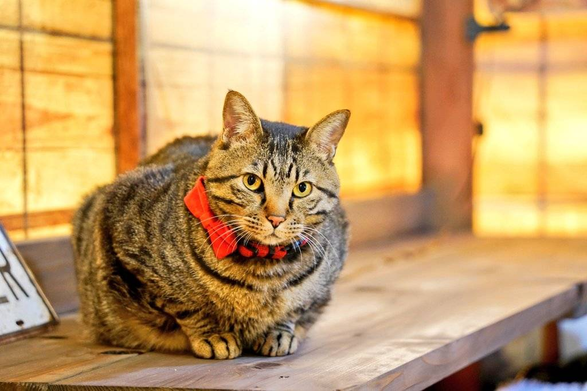
猫のご紹介
アトリエ高菜先生には高菜先生をはじめ、事情があり飼えなくなってしまった兄弟、保健所行きが決まっていた子猫、大怪我していた猫など訳アリの保護猫が計７匹住んでいます。なかなか猫に触れ合えることのない方はぜひ会いにきてください！
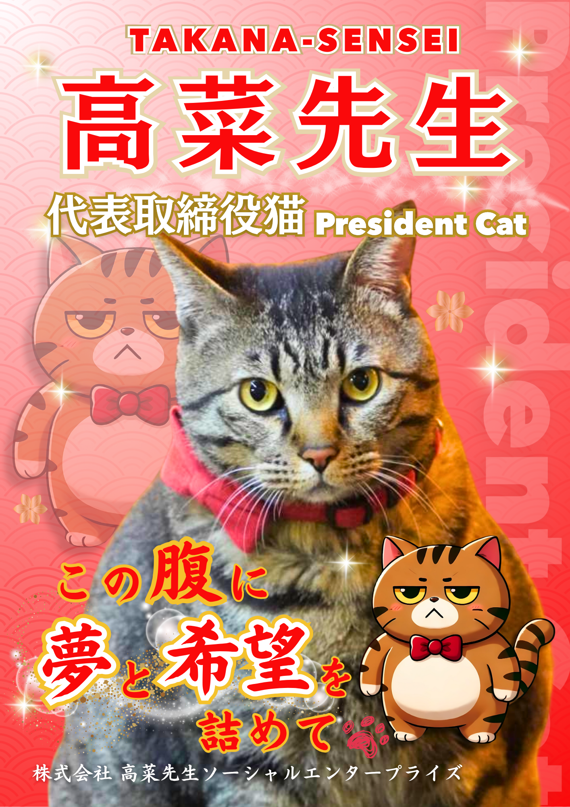
代表取締役猫
高菜先生
2019年8月2日宮崎県出身。2019年10月より山梨県に移住し超超エリート株式会社に入社。2代目看板猫をつとめる。現在は旨辛唐辛子ブランド【激辛高菜先生】や猫カフェ・コミュニティスペース【アトリエ高菜先生】の顔として活動している。世界一有名な猫を目指している。
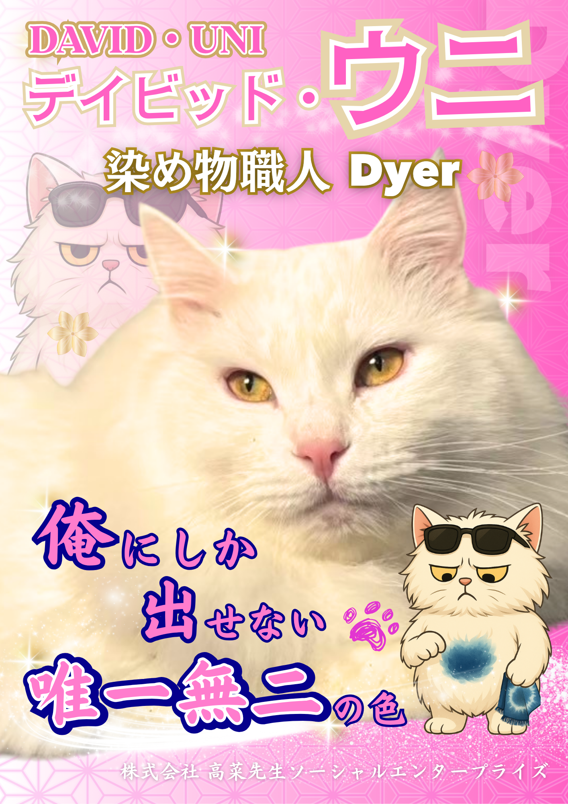
染め物職人
デイビッド・ウニ
2021年生まれの4歳。ししゃも・ノートルダムの弟。山梨県都留市出身。永遠と遊んでられる体力の持ち主で、常にオモチャで遊んでおきたい行動派猫。遊んでくれるなら誰でもOKで人見知りなど一切しない白猫。非常にすばしっこい。
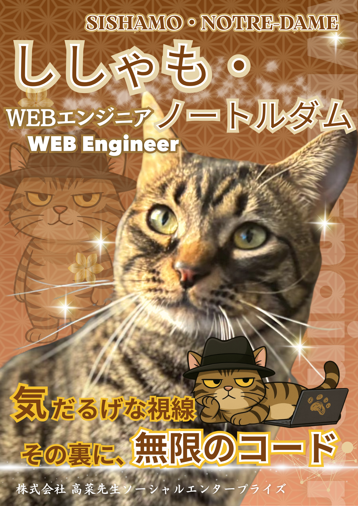
Webエンジニア
ししゃも・ノートルダム
2021年生まれの4歳。デイビッド・ウニの兄。山梨県都留市出身。基本的にやる気がなくほとんど何もしないけど、お腹が空いてるときだけはアピールがすごい。人見知りはしないけど積極的に近寄ってくるわけでもない。難病もちで何度か手術をしている。
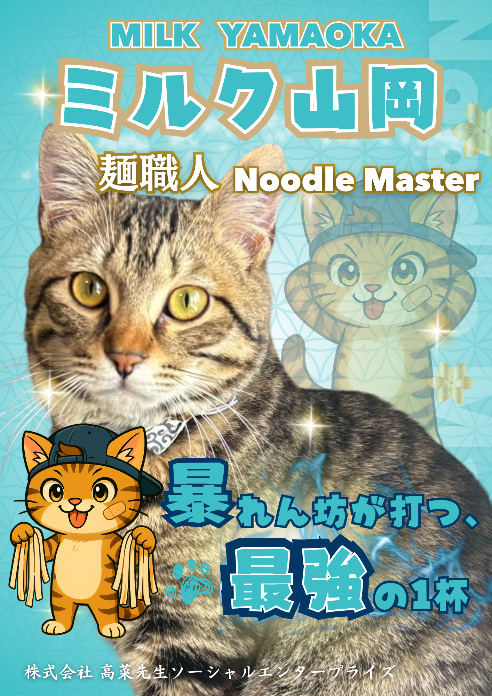
麺職人
ミルク山岡
2024年生まれの猫。山梨県笛吹市のとある企業の敷地内で保護され、誰も引き取ることができず保健所に行くことに。アトリエ高菜先生の代表桑原淳がたまたまSNSでそれを見かけて引き取ることに。非常にヤンチャで元気。一生走っている。
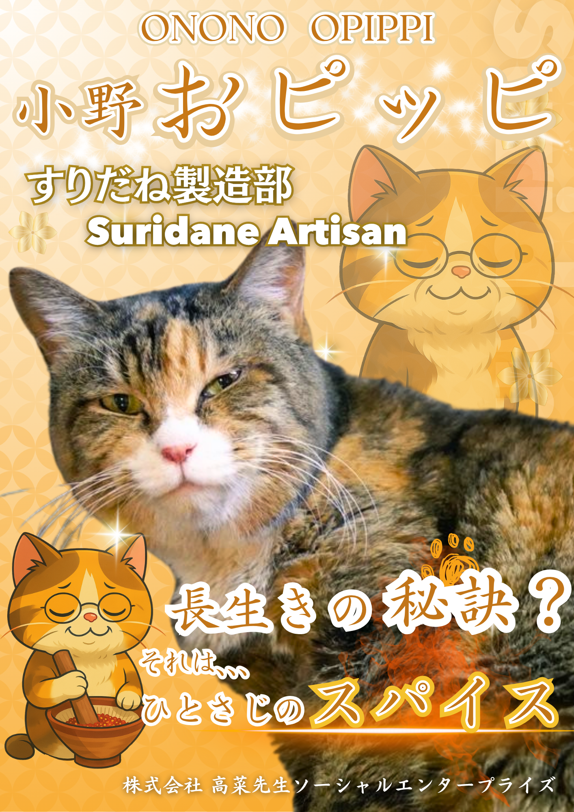
すりだね製造部長
小野のおピッピ
山梨県笛吹市出身。年齢不詳で推定10歳から15歳のおばあちゃん。大けがしているところを保護され、療養ののちにアトリエへ。基本的に寝ているが気分で膝に乗って甘えてくる。
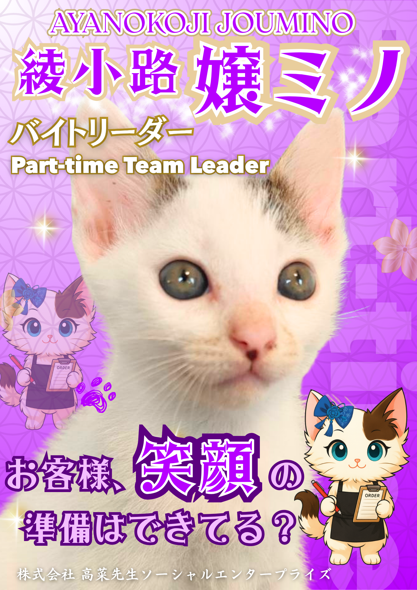
バイトリーダー
綾小路 嬢ミノ
2025年9月生まれ。エドモンド本田翼の姉。富士河口湖町出身。基本的におてんば、暴走しがちなタイプの女の子。スタッフが飲み会をしている時にノリで名前をつけられてしまった。

自由人
エドモンド本田翼
2025年9月生まれ。綾小路嬢ミノの妹。富士河口湖町出身。とにかく動いてないと気がすまないタイプ。当初オスだと勘違いして副キャプテン翼の名を授かるも、のちに女の子だとわかり改名。
利用の流れ
当店の利用の流れを簡単にご説明いたします。初めてご利用される方にもリラックスして猫たちとのひとときをお楽しみいただけるよう、御来店頂いた際にも改めてご説明させて頂きます。
到着
河口湖駅から徒歩12分。駐車場は10台完備しております。
受付
店内に入りましたらスタッフにお声がけください。簡単なご説明をさせていただきます。
猫とのふれあい
猫たちと自由にふれあいをお楽しみください。フリードリンクもご用意しております。
退店
お帰りの際はスタッフにお声がけください。またのご来店をお待ちしております。
ご利用料金
入場料無料
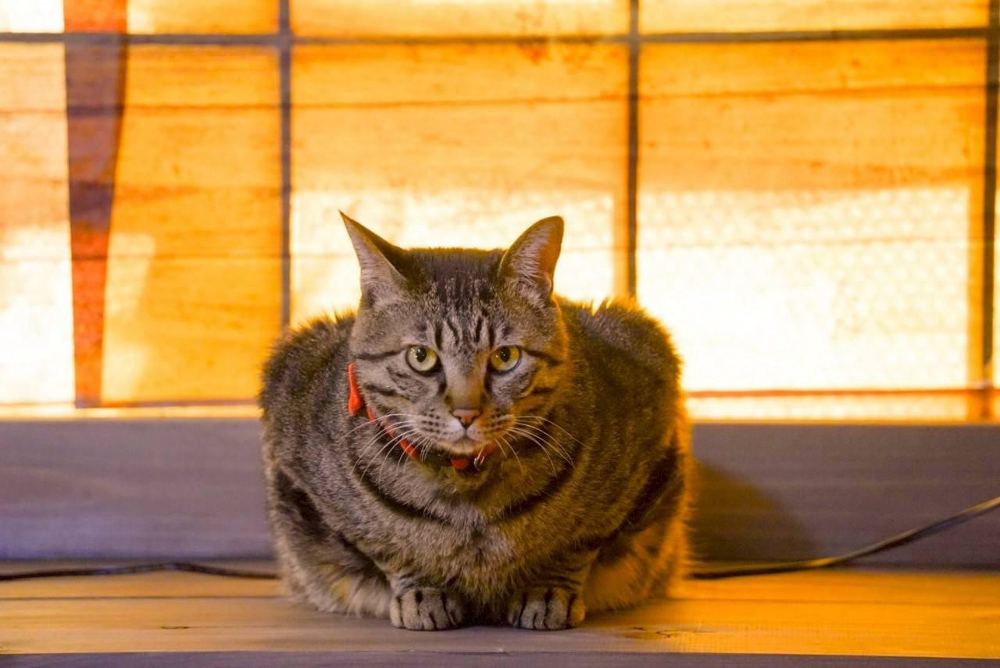
ご支援のお願い
アトリエ高菜先生は、すべての方に安心して訪れていただける「無料の保護猫コミュニティスペース」として運営しております。ドリンクや猫たちのごはん、トイレの砂など、日々の運営に必要なものはすべて、これまで私たち自身でまかなってきました。
今後は、より持続可能な形でこの場所を守っていくために、Amazon「欲しいものリスト」を通じたご支援をお願いすることにしました。ご無理のない範囲で、応援いただけましたらとても嬉しいです。
アトリエ高菜先生の雰囲気
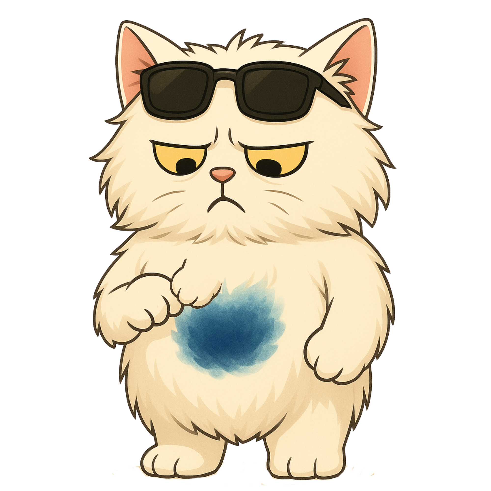
猫と過ごすための充実設備
-
Wi-Fi
-
コンセント
-
フリードリンク
-
ロッカー
アトリエでの過ごし方

リモートワーク
Wi-Fi、電源完備。静かな環境で集中して作業に取り組めます。

勉強・読書
落ち着いた空間で勉強や読書に没頭できます。漫画も読み放題です。

家族での利用
お子様連れも大歓迎。猫との触れ合いを通じて情操教育にも最適です。

撮影・SNS
可愛らしい猫たちやフォトジェニックな内装で、素敵な写真が撮影できます。
アトリエ高菜先生の魅力
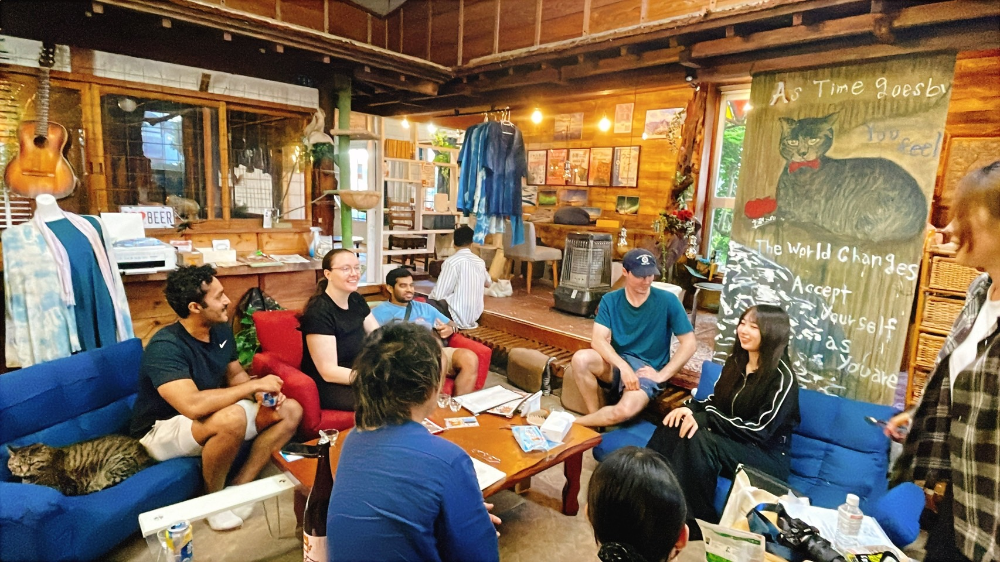
猫カフェ
当店は河口湖・富士吉田市の無料猫カフェです。猫好きな方はもちろん、猫と触れ合ったことが無い方や猫を飼っているけど他の猫を色んな猫と触れ合ってみたい方にもオススメです。
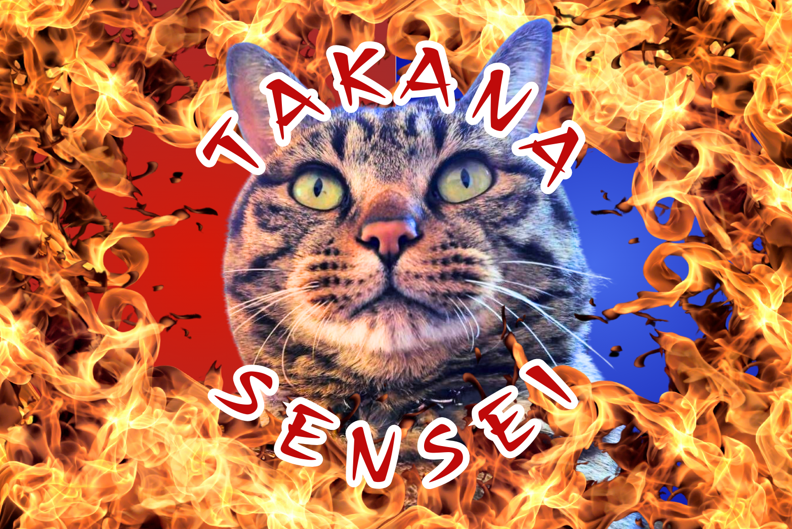
世界一の保護猫高菜先生
高菜先生は世界一有名な保護猫になるため様々なブランドの顔になっています。猫カフェの看板にもなっています。
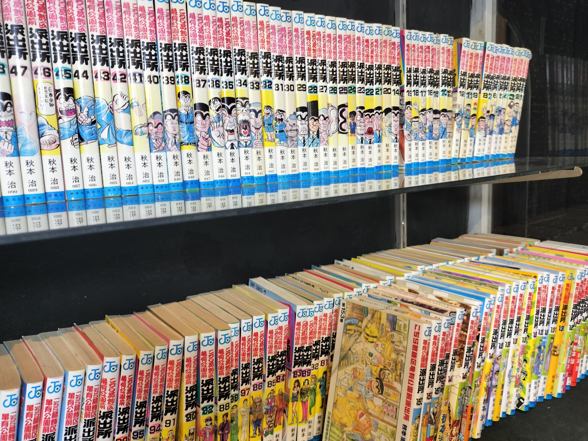
河口湖No.1の漫画ラインナップ
河口湖エリアには漫画喫茶がございませんが、当店では多数ご用意しております。漫画も無料です。
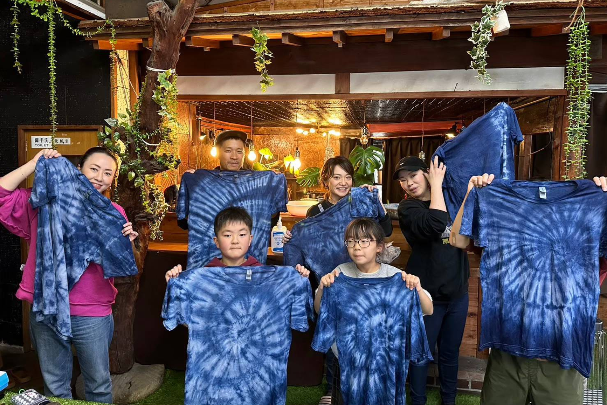
体験アクティビティ
当店では猫カフェとしてだけではなく、施設の一部で藍染体験も行っています。体験にご参加頂いたお客様もご利用いただけます。
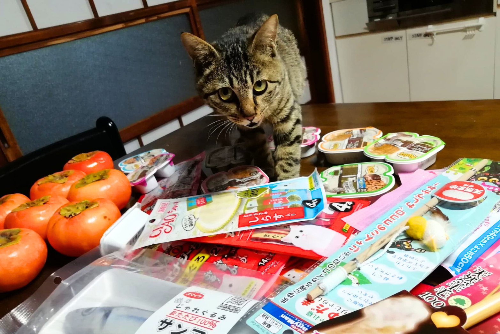
保護猫活動の取り組み
弊社サービスの売り上げの一部を保護猫活動に充てさせていただいております。保護猫である高菜先生の存在を商品やサービスを通して知ってくれた方が保護猫活動に興味を持ったり、実際に猫を保護するきっかけになればと思います。
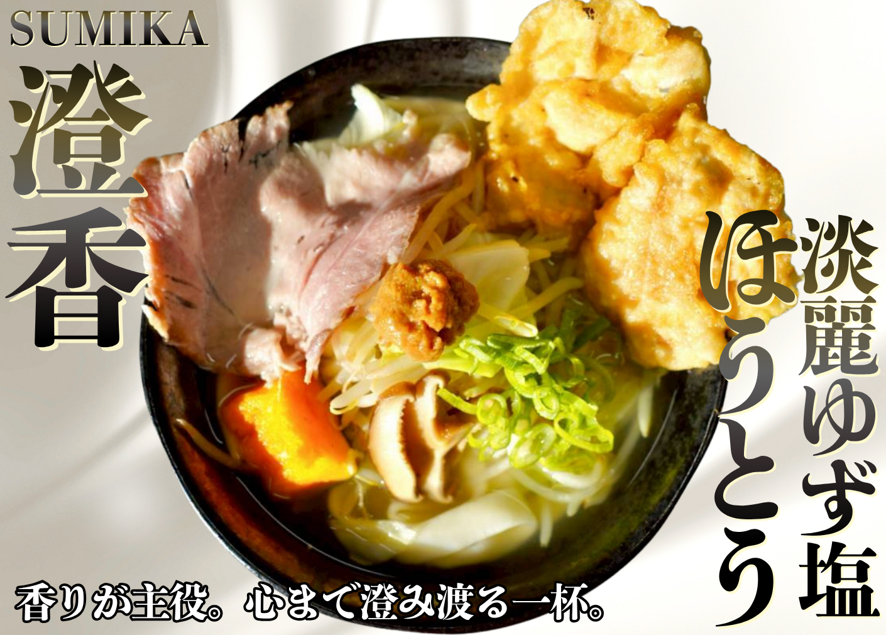
姉妹店でのお食事
猫カフェ向かいの姉妹店舗では吉田のうどんランチの営業を行っています。猫カフェ利用の前後にお立ち寄りいただけます。
お客様の声
よくあるご質問
保護猫活動の取り組み

アトリエ高菜先生を運営する超超エリート株式会社・株式会社高菜先生ソーシャルエンタープライズでは『高菜先生を世界一有名な猫に』を合言葉に保護猫につながる活動を続けています。
自社プロダクトやサービスの売上を保護猫活動に使用し、現在弊社では8匹の猫を保護しております。
また保護猫団体や社会支援団体への寄付も弊社代表桑原淳が個人で行っております。
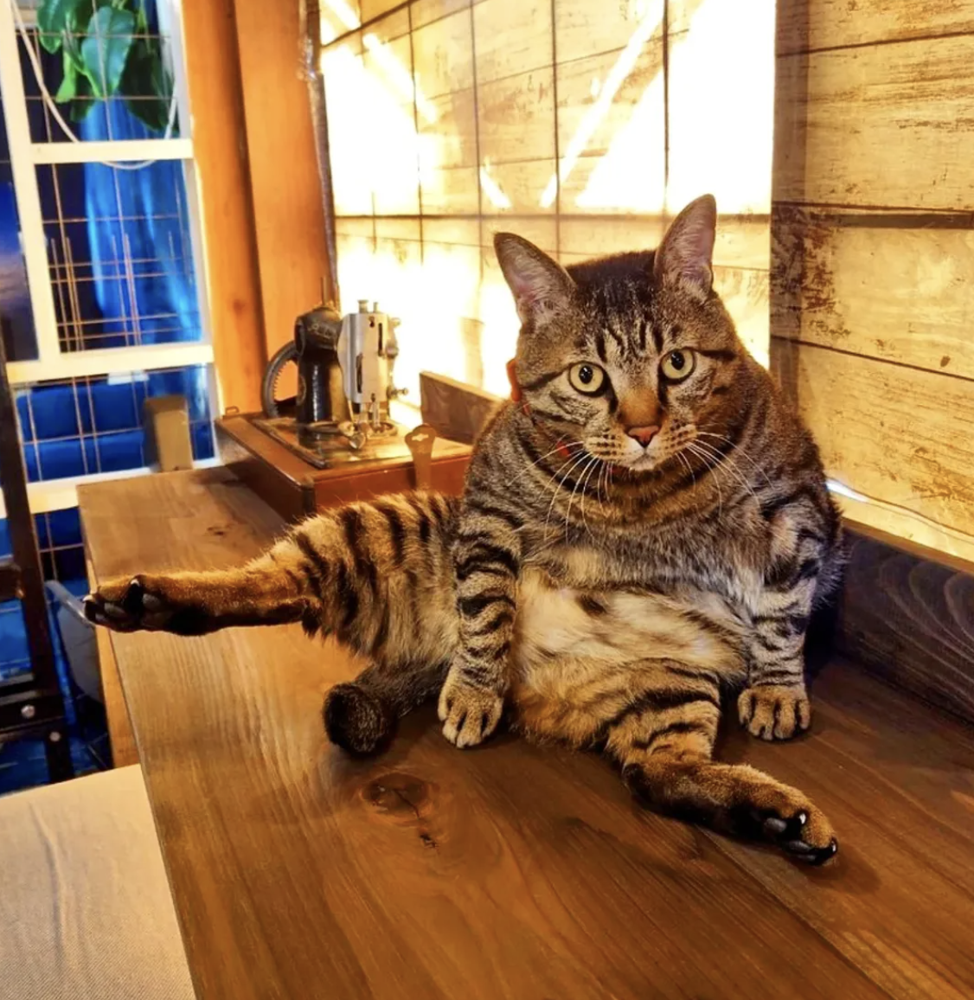
看板猫である高菜先生を世界一有名にするため様々なサービスやプロダクトのパッケージやブランド名として使用していますが、高菜先生の存在を知っていただくことで保護猫活動に興味を持つ人が増え、また実際に保護する人が出てくることで少しでも猫の殺処分が減り結果として社会に貢献できる企業になれるのではと考えています。
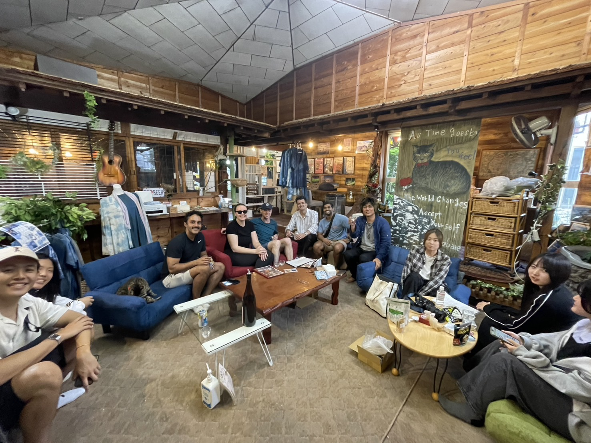
そのために無料の猫カフェ・コミュニティスペースも運営しております。
猫と人が幸せに暮らす世界を目指し、高菜先生の名を今後も広めてまいります。
ご利用のご注意事項
以下の注意事項を遵守して頂いたお客様のみ当店をご利用頂けます。
店内の猫は自由に触れ合えますが、猫が嫌がる接し方をした場合、驚いた猫さんが引っ掻いたり噛んだりする可能性がございます。
おなか、爪、尻尾の辺りは触られるのを嫌がる猫が多いです。極端に触りすぎないようにしましょう。
店内で大声や騒音を出されますと猫が攻撃的になったり体調不良になる場合がございますのでご配慮ください。
万が一、店内でお怪我をされた場合は応急処置はさせて頂きますが、治療費などの保証は致しかねます。
猫アレルギーの方はご自身の体調を判断した上でご入店ください。発症した場合の責任は負いかねます。
猫に人間の食べ物や飲み物は絶対に与えないでください。
店内は禁煙となっております。
携帯やカメラで撮影をする場合、フラッシュのご使用はご遠慮ください。
猫が飛び出す恐れがありますので、窓はお開けにならないようお願いします。入口と店内の扉に関しても、開けたら必ずすぐに閉めるようお願いします。
当店で撮影した猫さんの画像はSNSやブログなどにご使用頂いて結構です。ただし、商用 / 営利目的の場合は必ずご連絡ください。
関連サービスの紹介
アトリエ高菜先生を運営する超超エリート株式会社・株式会社高菜先生ソーシャルエンタープライズで行っている事業の紹介です。
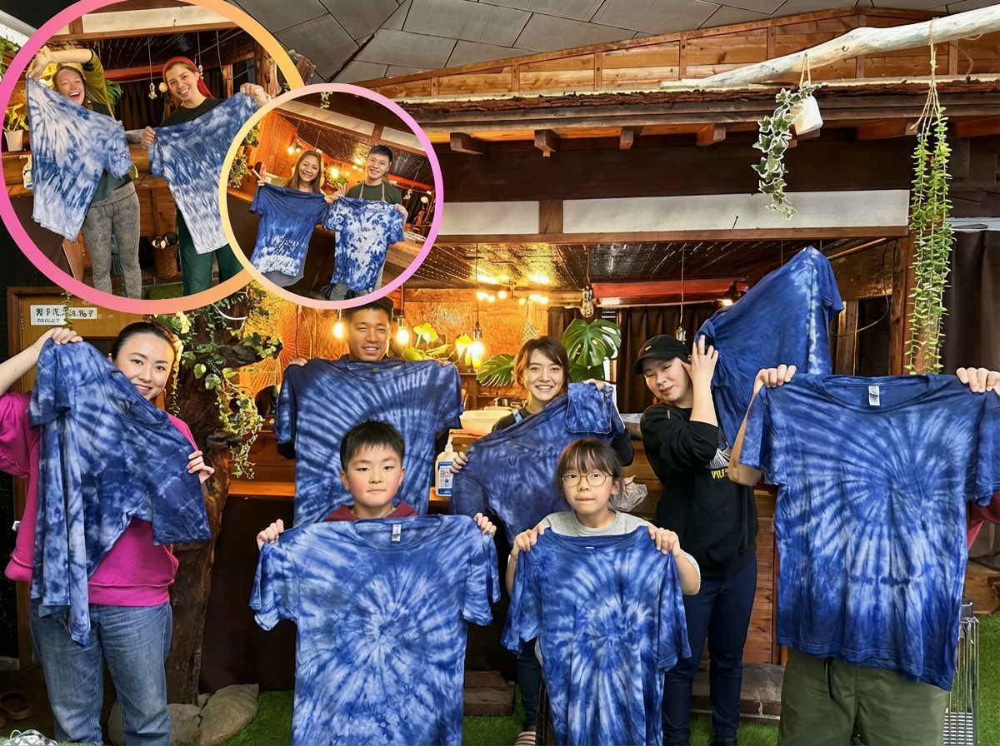
藍染め体験のご紹介
VIEW MORE →
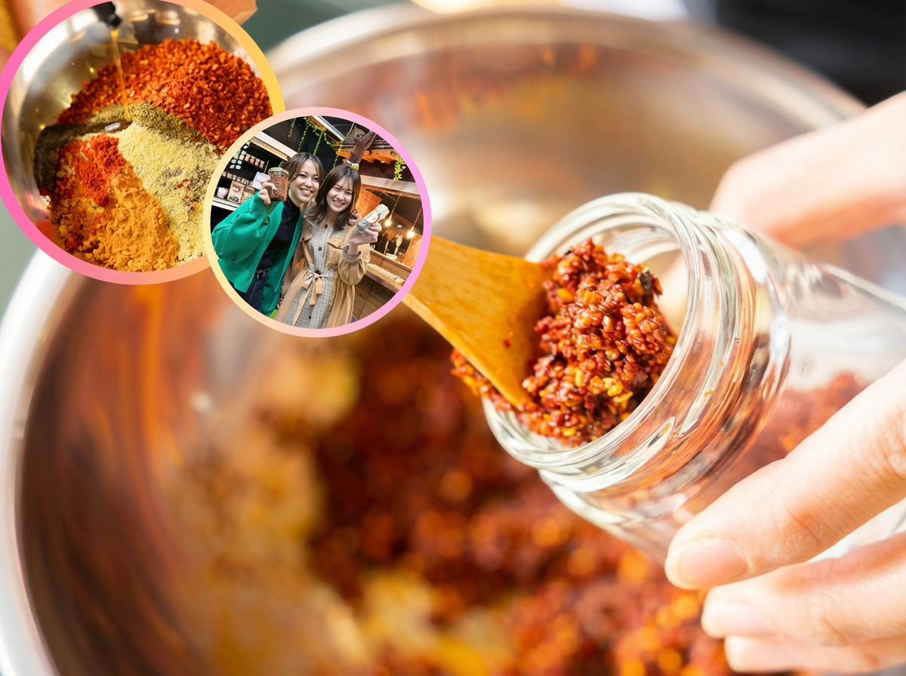
調味料作り体験のご紹介
VIEW MORE →
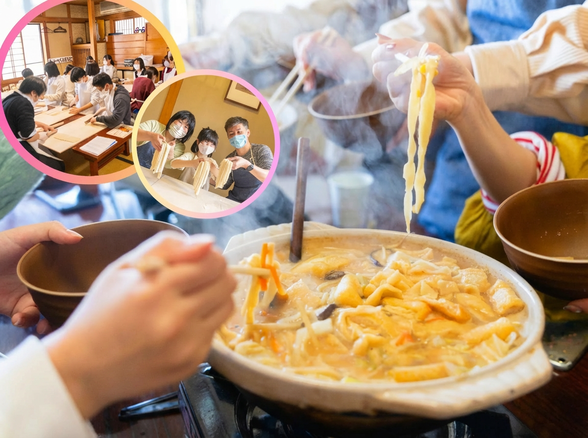
富士家のご紹介
VIEW MORE →
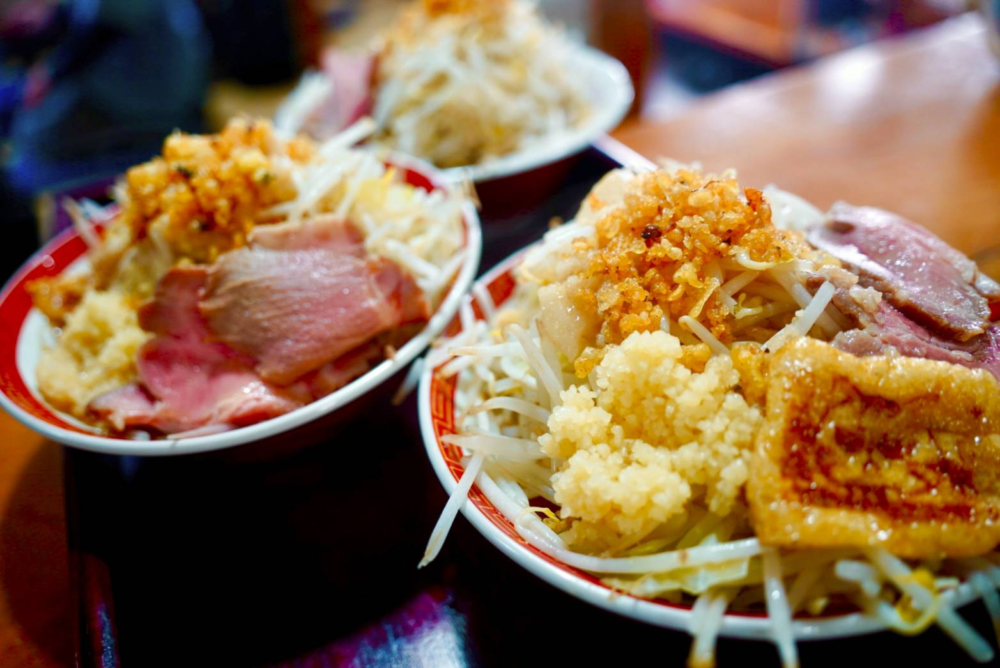
ランチの紹介
VIEW MORE →
代表＆高菜先生紹介
代表：桑原 淳 / JUN KUWABARA
超超エリート株式会社 代表取締役
株式会社高菜先生ソーシャルエンタープライズ 代表取締役
ハサミ一本で世界を巡り、見えた景色。
「ギブの精神」で孤独のない社会をつくる。

世界62ヶ国1301人をカットした旅人美容師。帰国後は東京で美容室を開業し、現在は地元山梨を拠点に飲食事業や観光事業を展開。「貧困や生きづらさの原因は孤独にある」という考えのもと、事業を通じて支え合えるコミュニティづくりに挑み続けています。
01. 美容師から世界一周の旅へ
山梨県富士吉田市生まれ。都内で美容師として活動後、人生を見つめ直すため退職。22歳で日本縦断と1000人握手の旅を完遂しました。その後「世界中で1000人カットする」という目標を掲げ海外へ。62ヶ国を巡り、1301人のヘアカットを行い書籍化もされました。
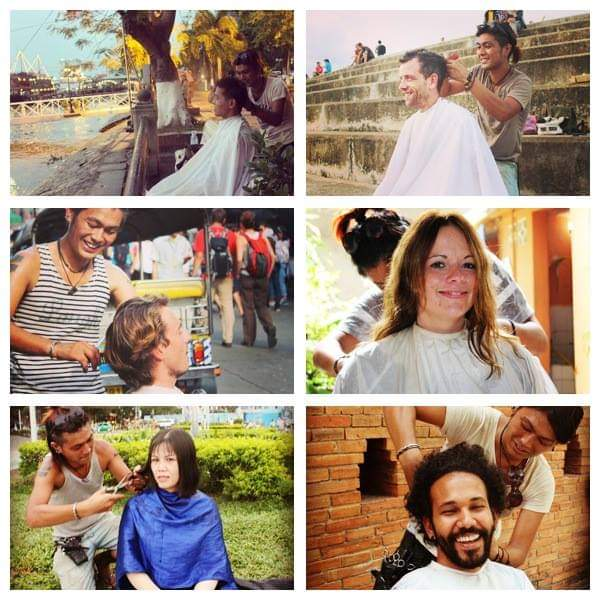
02. 起業、そして地獄からの再起
帰国後、資金ゼロの状態から高円寺に美容室「Up to You」を開業。その後山梨での起業に挑戦しますが、コロナ禍による閉業や資金難など、経営者として幾度もの苦難を経験しました。それらを乗り越え、現在は飲食事業や調味料ブランドなどを多角的に展開しています。

03. 次世代へ繋ぐコミュニティ作り
現在は自身の経験から「孤独の解消」をテーマに活動。子どもの職業体験「キッズアカデミー」や子ども食堂の運営に注力しています。子どもたちへの体験機会の提供はもちろん、そこから生まれる親同士の繋がりを大切にし、地域全体で支え合う社会貢献事業を推進しています。


高菜先生 / Takana-sensei
代表取締役猫 / 社会貢献の象徴
瀕死だった保護猫が、社会を変える象徴に。
多岐にわたるブランドの顔として活躍。

瀕死の状態から奇跡的に回復し、現在は「高菜先生」ブランドの顔として活躍中。自身の名を冠した激辛調味料や店舗の看板を背負い、その売上の一部は保護猫活動などの社会貢献に充てられています。存在そのものが社会を変えるきっかけを作る、わがままボディな猫。
01. 奇跡の生還と名前の由来
宮崎県延岡市のスーパー裏で衰弱していたところを保護。高菜漬けの桶に入れられて病院へ運ばれたことから「高菜」と命名されました。その後山梨へ移住。回復後には車中泊での九州一周3000kmの旅にも同行するなど、驚異的な生命力と適応力を持っています。
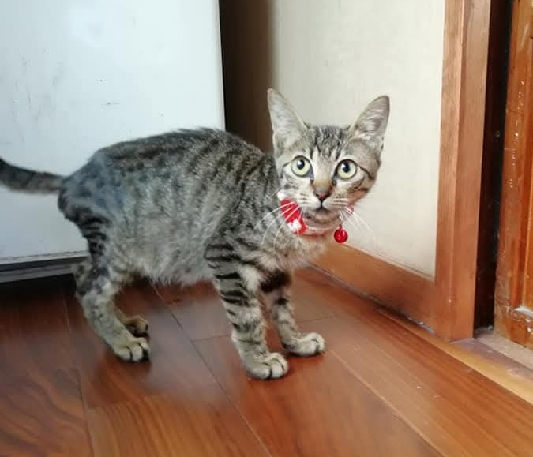
02. ビジネスと社会貢献の象徴
現在は「代表取締役猫」として、飲食やアパレルなど様々な事業の公式キャラクターを務めています。高菜先生の知名度が上がることで保護猫活動への関心が高まり、収益が社会課題の解決に還元される仕組みを作っています。
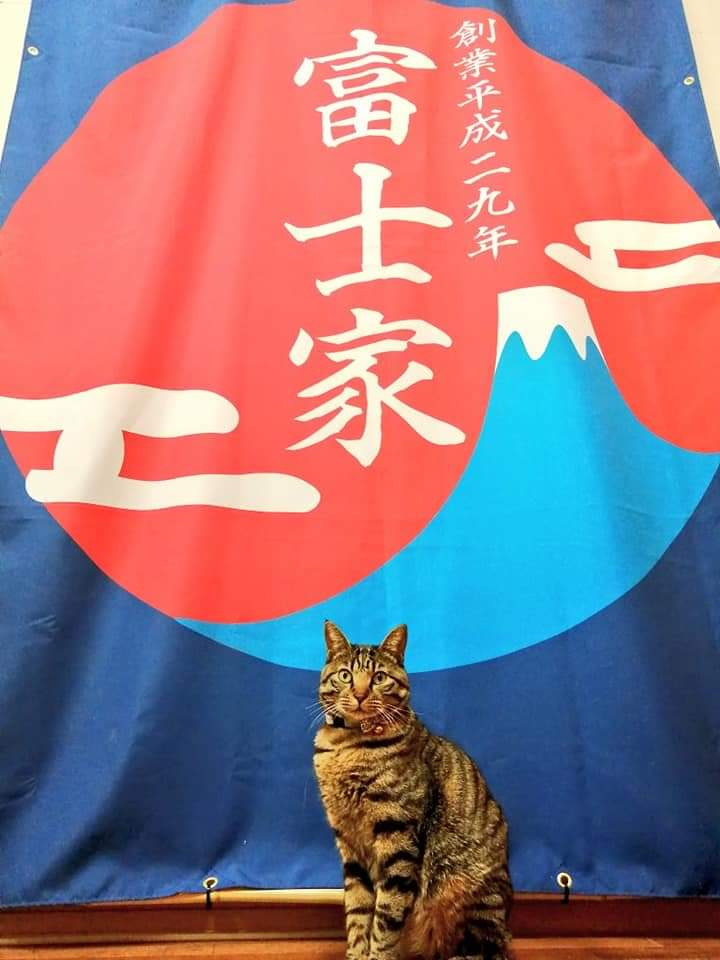
03. アトリエでの日常
普段は「アトリエ高菜先生」にて、看板猫としてお客様を迎えています。お昼寝をしながら訪れる人々に癒やしと笑顔を提供し、人と猫、人と人を繋ぐ架け橋として活躍しています。
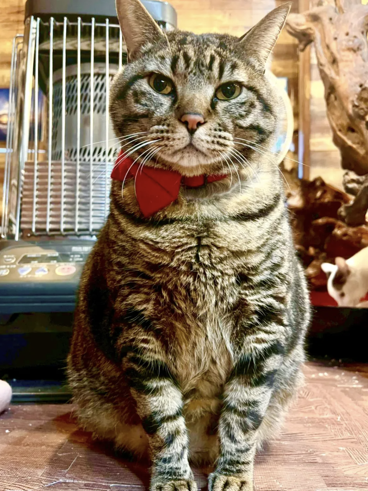
アクセス
アトリエ高菜先生
| 住所 | 〒401-0301 山梨県南都留郡富士河口湖町船津3250-3 |
|---|---|
| 駐車場 | 無料駐車場有 |
| 予約 | 不要 （ほぼ年中無休で営業しておりますが、確実にご利用になりたいという方は事前のお問い合わせをお願い致します。） |
| 営業時間 | AM 11:00~17:00 |
| 定休日 | 不定休 |
| 催行人数 | 1名〜 |
| 最寄駅 | 富士急行線河口湖駅（徒歩12分） |